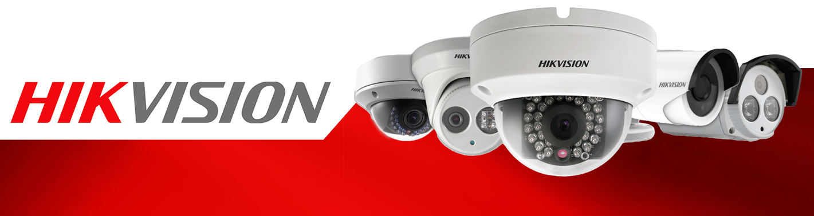

CCTV
Productos
Con el objetivo de ofrecer a nuestros clientes productos de alta calidad y confiable para su seguridad ofrecemos las siguientes marcas.
Hangzhou Hikvision Digital Technology Co., Ltd. es un proveedor de productos de video vigilancia con sede principal en Hangzhou, China. Fue fundada en 2001 y actualmente cuenta con más de 12 y más de 8.000 empleados alrededor del mundo. Han logrado posicionarse en el mercado como unos de los primeros proveedores en sistemas de CCTV debido a que cada año reinvierte gran cantidad de sus ingresos en renovación y mejoras de sus productos. Para conocer todos los productos que ofrece la marca haga click aquí
Dahua Technology es proveedor avanzado de productos y soluciones de video vigilancia a nivel mundial. De acuerdo a un informe informe IHS de 2016, es la segunda mayor cuota del mercado mundial de video vigilancia en 2015. Cuenta con más de 5,000 ingenieros trabajan en tecnologías de vanguardia; lentes de cámara, sensores de imagen, codificación y transmisión de video, procesadores integrados, procesamiento gráfico, análisis de video, la fiabilidad del software y la tecnología de seguridad de red. Para conocer todos los productos que ofrece la marca haga click aquí
Instalación y Mantenimiento de sistemas de CCTV
Nuestro personal de Instalación y mantenimiento está compuesto por profesionales, técnicos, tecnólogos e ingenieros. Aunque el personal tiene unas actividades bien definidas como montaje, configuración, revisión, acondicionamiento y reparación de las conexiones, también está en la capacidad de brindarle a su empresa asesoría sobre posibles soluciones que ayuden a optimizar el funcionamiento del sistema.